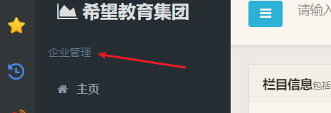
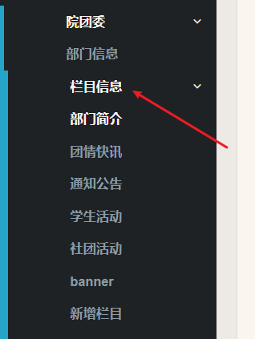
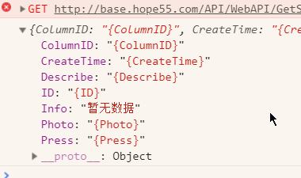
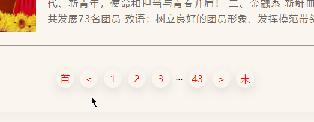
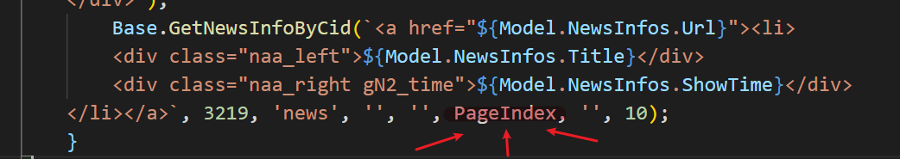

1. 数据传递
1.后台官网：http://base.hope55.com/Home/Index#
1.1 先配置企业部门的id；
0.
1 | var api = { |
1.找学校；
1.在最上面的部门管理找

2.然后在下面找到对应的学校；

2.1 鼠标放在企业信息上面，可以在左下角看到企业id
1.2 同理，找到部门的id；
- 1.比如我这里写的是这个学校的院团委；

- 2.鼠标放在栏目信息，这些地方，部门id也不会变；
1.2 应该就是上传数据了吧
1. 导航栏
1.首页导航栏，模板：
1.1 位置：js\public.js
1.2 代码：
1 | // 导航栏遍历渲染 |
1.
$("#navBox").html(_html);这个是链接id的；1.1 ul那边；
1
2
3
4<div class="nav">
<ul id="navBox">
</ul>
</div>
1.3 数据哪来的？
在栏目信息里面；

- 1.下面的部门简介，团情快讯这些，就是导航栏的数据；
- 2.首页的话，自己手动加；
1.1 跳转页面
1.导航栏渲染出来了，但页面能跳转过去吗？不能；
- 1.是空白的；
- 2.怎么设置这个跳转呢？
2.看路径：http://127.0.0.1:5500/list.html?HType=2&CId=3219
2.1 list.html；
1.需要创建list.html文件，这个路径写死的，在前端用的字符串，不是后端路由；2021-5-19 11:46:28
2.然后在郭老师那边，没怎么找到list；
3.老李这：
1
2
3
4
5
6
7
8
9
10
11
12
13
14
15
16
17
18
19
20```
### 2. 页面盒子传入数据
1.例如：

2.怎样能传入进去？
2.1 首先找到拼接的地方。但先不问什么能拼；别人的代码，我看了半天没看懂，本来自己也还是小白；
+ 1.在base.js:537的地方；//获取文件信息集合
```js
GetNewsInfoByCid: function (strHtml, Cid, IDname, needPhoto, CssClass, PageIndex, SearchWord, PageSize, DefaultImg, descNum) {1.1 html字符串，Cid信息源id，装html的盒子的id，
1.2 needPhoto，
2.2 可以先打印一下，应该要打印一下，看一下里面的数据；
1 | var a1 = Base.GetFilesInfoByCid('', 3222, '', '', 1, '', 3); |
- 1.但栏目id(Cid)一定要有，不然看不到啥数据；
2.3 例如：这里院团委的部门新闻，因为没有专门的 部门新闻；我用的 团情快讯

1.代码：
1
2var a1 = Base.GetNewsInfoByCid('', 3218, "", "", "", 1, "", 3);
console.log(a1);2.打印结果：
1
2
3
4
5
6
7
8
9
10
11
12
13
14
15
16
17
18
19
20
21(3) [{…}, {…}, {…}]
0:
Author: "院团委供稿"
Cover: "http://base.hope55.com/gzcjxy/UploadFile/UploadFile_Img/20201106154743e90097b1b6a24ed79fc84c4b37c6b349.jpg"
Describe: "“感恩之路，希望力量”2020年感恩季协调会议为引导学生厚植爱国主义情怀，把坚定理想信念，勇担责任，砥砺前行的精神内涵自觉融入和发展到中国特色社会主义事业、建设社会主义现代化强国、实现中华民族伟大复兴的奋斗之中，推动学院发展。2020年11月2日，贵州财经大学商务学院在博学楼112召开感恩季协调会。..."
FID: 3218
HasPhoto: true
Hot: false
ID: 47621
KeyWords: ""
Press: 199
ShowTime: "2020-11-06T00:00:00"
Source: "新媒体中心"
Title: "感恩季｜贵州财经大学商务学院“感恩之路，希望力量”2020年感恩季协调会议"
Top: false
Url: null
__proto__: Object
1: {ID: 47620, FID: 3218, Title: "凝聚青春力量·畅聊人生展望——我与院长面对面交流会", Author: "院团委供稿", Source: "新媒体中心", …}
2: {ID: 47619, FID: 3218, Title: "为新时代中国特色社会主义新疆建设贡献青春力量", Author: "共青团中央", Source: "共青团中央", …}
length: 3
__proto__: Array(0)3.这样就知道
Model.NewsInfos.Cover那些玩意了；4.但是，这不是马上的，而是先传到函数的形参里面。
3.要知道model后面到底什么？是NewInfos？还是Model.FilesInfo；这个要在Base.js里面看注释；
3.1 banner是
1 | //获取文件信息集合 |
- 为什么？
3.2 是后天那边吗？但只知道后台与前端这里的js联系，只靠Cid；
- 1.郭老师说：这是后台那边有路由处理；
1.3 我已经懵了
1.懵了，真的懵了。累，我好想自己写链接接口。
2.但我不会。唉
3.看来，还是应该继续学习，但是学到前端使用接口读取后端数据的操作，总觉得还有很久。2021-5-19 15:47:49
4.现在只有难受着先用着？？
5.我应该边做，边学啊；怎么一直在弄代码啊；
6.计划，计划吧；2021-5-19 15:49:27
7.要改修模板，定位去掉，要用浮动？定位好像不能自己撑开盒子；
- 1.但浮动好像也不行；看郭老师怎么写的；
8.哦豁，忘记写笔记了，清楚浮动，可以撑开盒子；
9.导航栏飞在上面了，要拿下来；
9.1 查代码：$(".NAA_content").append
- 1.语法：$(selector).append(content)
- 2.效果：append() 方法在被选元素的结尾（仍然在内部）插入指定内容。
9.2 同时找到的在前面插入；
- 1.https://www.w3school.com.cn/jquery/manipulation_prepend.asp
- 2.
$(selector).prepend(content)
10.没找到数据

10.1 同时页面那边也没有，看看后台有没有数据；
10.2 好家伙，后台那边没有数据；
1.4 部门概况
1. 找方法
1.传入特有的内容；
2.查看老李的，用的方法是：Base.GetSinglePageInfoByCid()
3.看看郭老师的：Base.GetSinglePageInfoByCid(Model.SinglePage.Describe, CId, "news");
4.一样的；
5.解析这个方法
5.1 去Base.js看看；
1 | //获取单页信息 |
- 1.看下面的也没看出啥名堂；
- 2.直接用，看能不能实现效果；
5.2 没有数据；
3. 选择base里的方法
1.里面很多方法，怎么选？
2.根据：

根据这里选；
1.5 搜索框
1.搜索框咋个弄？
2.第一步：
1 | $(".searth a").click(function () { |
3.第二补，渲染search.html
3.1 没有渲染，直接建立了一个新的html；
- 1.然后在下面加
1 | <script> |
1.6 下面的二维码
1.怎么弄这个二维码？
1.1 先看老李的；打印不出信息，去后台找找在哪；
2.后台在：对应学习——官网——二维码；
2. 笔记
2.1 $(selector).html()
1.https://www.w3school.com.cn/jquery/manipulation_html.asp
2.html() 方法返回或设置被选元素的内容 (inner HTML)。
如果该方法未设置参数，则返回被选元素的当前内容。
2021-5-19 09:59:14
2.2 分页不变
1.

2.是参数没有设置对；
- 1.之前一直写的1；
- 2.现在写为PageIndex
2.1

2.2 为啥
1 | GetNewsInfoByCid: function (strHtml, Cid, IDname, needPhoto, CssClass, PageIndex, SearchWord, PageSize, DefaultImg, descNum) { |
- 1.从结论做出假设：PageIndex是每页的页码，PageSize每页多少个数据；2021-5-20 13:59:17
2.3 url为null但跳转
1.明明url为空：片段
1 | Source: "新媒体中心" |
2.但仔细想想，这个地方，没办法拿到Url；额，不是。我也不知道为啥拿不到；
3.看代码是怎么给的：
1 | .myReplace(Model.NewsInfos.Url, (Curren.isEmpty(GetData[i].Url) ? "list.html?HType=2&CId=" + GetData[i].FID + "&NId=" + GetData[i].ID : GetData[i].Url)) |
- 1.
GetData[i].Url是否为空，是的话，不是的话。从Base.js得出，这里是同步，返回值GetData在末尾，这里会一直为空； - 2.然后就是拼接出来的
"list.html?HType=2&CId=" + GetData[i].FID + "&NId=" + GetData[i].ID
4.很好，这个是
1 | //获取列表信息集合 |
5.看看其他，是不是这样；
5.1 只有两个地方是；一个是上面的列表信息集合。一个是：
1 | GetInfoBySearch: function (selText, IDname, strHtml, did, pageSize) { |
- 1.通过查找获取信息吗？2021-5-20 14:40:04
2.4 index.js怎么联系的index.html
1.忽然想起这个问题；
2.5 pagesize
1.好像不是一页数据有多少，而是一页遍历了几次；
2.6 被选中-分页
1.郭老师，在JS里面写了相应代码；

2.7 理解导航
1.代码
1 | //导航栏遍历 |
1.1 先去找Base.GetNavColumnsByDid();